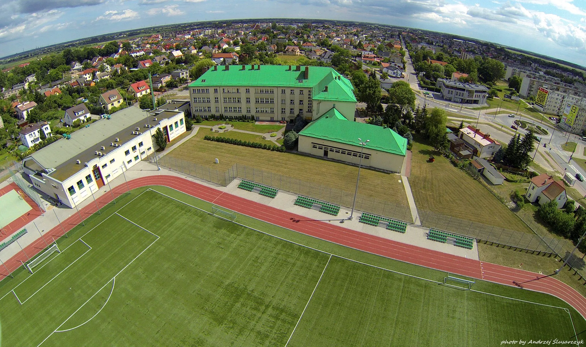

I Liceum Ogólnokształcące im. Marii Konopnickiej w Pruszczu Gdańskim
Nasza szkoła oferuje różnorodne profile klasowe dopasowane do zainteresowań uczniów.
Szkoła znajduje się na ulicy Justyny Niemczewicza 1 w Pruszczu Gdańskim.
Dni otwarte odbędą się 8 kwietnia o 10:00 – serdecznie zapraszamy!
▶ Klasa 1A - Matematyczno-Informatyczna
Idealna dla uczniów zainteresowanych przedmiotami ścisłymi i nowoczesnymi technologiami.
Przedmioty rozszerzone: matematyka, informatyka, geografia/fizyka.
Robotyka w klasie II i III.
Języki: angielski, niemiecki.
Przedmioty punktowane: język polski, matematyka, język angielski, geografia lub fizyka.
▶ Klasa 1B - Humanistyczna
Doskonały wybór dla miłośników literatury, historii i nauk społecznych.
Przedmioty rozszerzone: język polski, historia, język angielski.
Przedmiot uzupełniający: bezpieczeństwo publiczne w klasach I-III.
Języki: angielski, niemiecki.
Przedmioty punktowane: język polski, matematyka, język angielski, historia.
▶ Klasa 1C - Biologiczno-Chemiczna
Najlepsza opcja dla przyszłych lekarzy, biologów i chemików.
Przedmioty rozszerzone: biologia, chemia, język angielski.
Języki: angielski, niemiecki.
Przedmioty punktowane: język polski, matematyka, język angielski, biologia lub chemia.

Źródło: liceum.zso1.pl